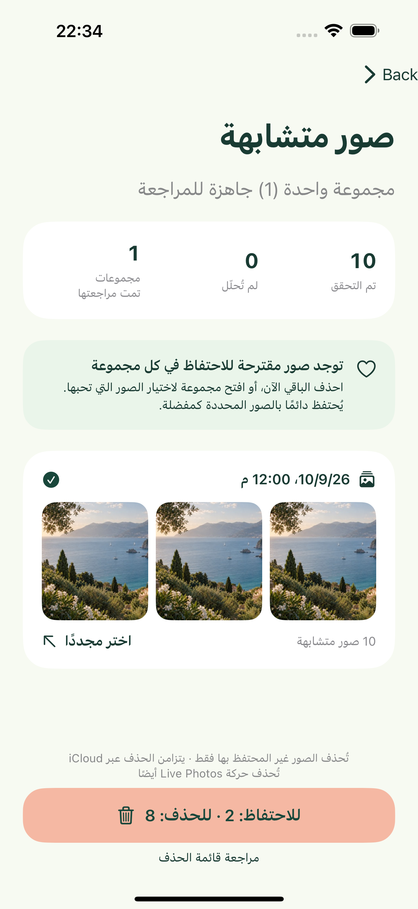
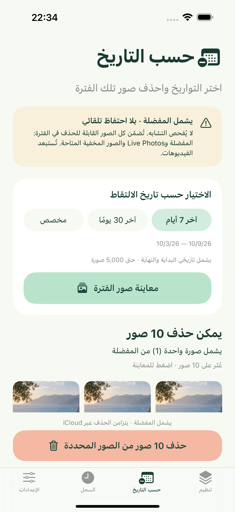
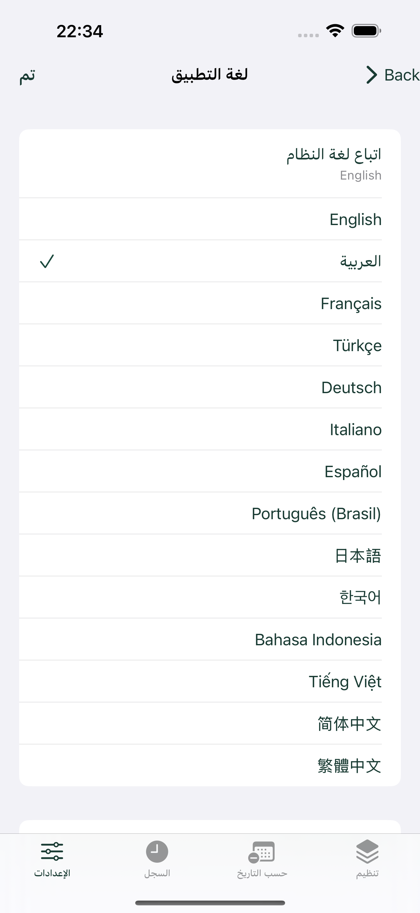

اختر فترة زمنية
نظّم صور آخر 7 أيام أو هذا الشهر أو فترة مخصصة. يشمل النطاق تاريخَي البداية والنهاية، ويعتمد على تاريخ إنشاء الصورة وتقويم جهازك ومنطقته الزمنية. عند منح وصول محدود، تُضمّن الصور المسموح بها فقط.
SNAPTRIM · PHOTO CLEANER
اعثر على الصور المتشابهة على iPhone، واختر ما تريد الاحتفاظ به واحذف الباقي. أو احذف الصور ضمن فترة زمنية، بما فيها المفضلة، بعد التأكيد.
مساحة صغيرة لذكرياتك.الإصدار القادم 1.1: iPhone · iOS 17+ · 1.1: مجاني مع إعلانات. لا حساب ولا مشتريات داخل التطبيق. تُعالج الصور على جهازك.
نظّم صور آخر 7 أيام أو هذا الشهر أو فترة مخصصة. يشمل النطاق تاريخَي البداية والنهاية، ويعتمد على تاريخ إنشاء الصورة وتقويم جهازك ومنطقته الزمنية. عند منح وصول محدود، تُضمّن الصور المسموح بها فقط.
تُجمع الصور المتشابهة ولقطات التصوير المتتابع التي يحددها النظام على جهازك. تبدأ كل مجموعة باقتراحات لصور تحتفظ بها؛ ويمكنك الاحتفاظ بالمزيد أو اختيار صورة أخرى. يحمي تنظيف الصور المتشابهة الصور المفضلة ويحتفظ دائمًا بصورة واحدة على الأقل في كل مجموعة. الاقتراحات ليست تقييمًا جماليًا.
نظّف مجموعة واحدة أو جميع الصور التي لم تختر الاحتفاظ بها، ثم أكّد عبر iOS. يترك الإلغاء الصور دون تغيير. لا يظهر في سجلك المحلي إلا عمليات الحذف الناجحة.
تتيح علامة التبويب المنفصلة «التنظيف حسب التاريخ» اختيار آخر 7 أيام أو آخر 30 يومًا أو فترة مخصصة. عاين الصور وأعدادها، ثم أكّد في التطبيق وعبر iOS. يحذف ذلك كل الصور القابلة للحذف ضمن الفترة، بما فيها المفضلة وصور Live Photos والصور المخفية التي يمكن للتطبيق الوصول إليها. ولا يحتفظ بأي صورة تلقائيًا ولا يستخدم قائمة التجاهل الخاصة بتنظيف الصور المتشابهة. تُستبعد الفيديوهات. وتُحصى الصور التي يتعذر على النظام حذفها وتُحفظ.
لا يضيف التنظيف حسب التاريخ صورًا جديدة إلى اختيار تم تأكيده. يؤدي تغيير التواريخ أو المكتبة أو مغادرة التطبيق إلى إبطال المعاينة. راجعها مجددًا قبل الحذف. عند تفعيل صور iCloud، تتزامن عمليات الحذف مع الأجهزة الأخرى التي تستخدم المكتبة نفسها.
شاشات فعلية للتطبيق باستخدام صور تجريبية قابلة للحذف، وليست مكتبة شخصية لأي مستخدم.
اختر فترة زمنية

احتفظ بصورك المفضلة

متأكد من أنك لم تعد تحتاجها؟ نظّف حسب التاريخ.

لغتك، اختيارك
يتبع SnapTrim لغة الجهاز المدعومة افتراضيًا، ويستخدم الإنجليزية عند عدم دعمها. اختر إحدى اللغات الـ14 في الإعدادات أو عُد إلى «اتباع لغة النظام». يُحفظ اختيارك محليًا. يتغير نص التطبيق فورًا؛ وقد تتبع مربعات حوار الأذونات والحذف في iOS إعداد لغة التطبيق في النظام. لا يمكن تغيير اللغة أثناء الفحص أو التحميل أو الحذف.
تدعم كل عملية ما يصل إلى 5,000 صورة. تُقارن الصور الملتقطة خلال 10 دقائق للكشف عن التشابه؛ وتُستخدم معرّفات التصوير المتتابع لتجميع لقطاته. قد تتطلب المكتبات الكثيفة فترة زمنية أصغر. التعرّف وسيلة مساعدة وقد يفوّت بعض النسخ المكررة. يستخدم التعرّف على Live Photos الصورة الثابتة؛ أما الحذف فيزيل العنصر كاملًا. التنزيل من السحابة معطّل افتراضيًا. عند تفعيله، تُستخدم خدمة «الصور» من Apple وقد تُستهلك بيانات ومساحة تخزين مؤقتة. يتوقف الفحص في الخلفية؛ وتساعد النتائج المخزّنة مؤقتًا عند إعادة تشغيله.
لاسترجاع صورة، افتح تطبيق «الصور» من Apple ثم «المحذوفة مؤخرًا»، ويكون ذلك عادةً خلال 30 يومًا. لا يفرغ SnapTrim «المحذوفة مؤخرًا» نهائيًا ولا يحتفظ بنسخة احتياطية من الصور. يدير iOS وiCloud المساحة المتاحة؛ ولا يضمن الحذف زيادة فورية في مساحة التخزين الحرة.
أرسل عبر البريد الإلكتروني طراز iPhone وإصدار iOS وإصدار التطبيق والخطوات التي أدت إلى المشكلة. لا ترسل صورًا خاصة. المطوّر: Peng Lin.
المساعدة والدعم